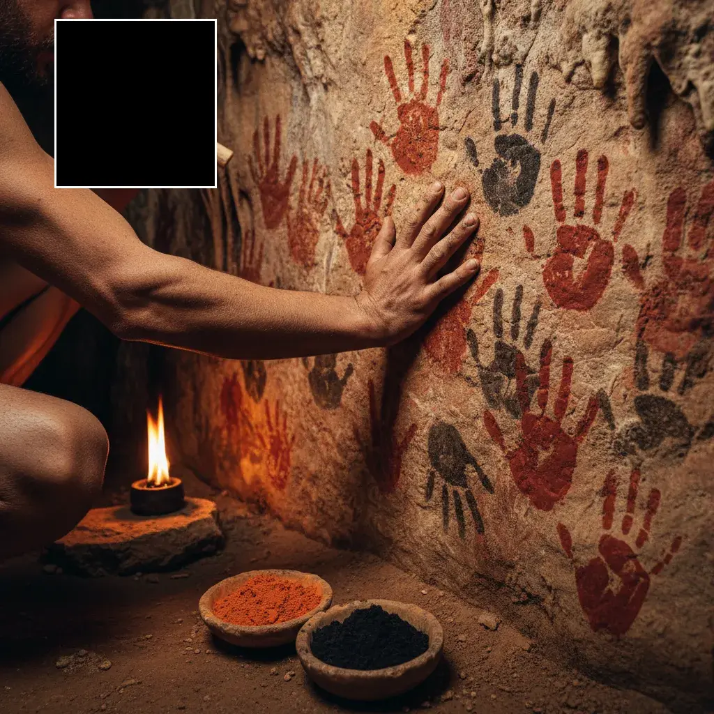

Около миллиарда лет назад в океане произошло событие, за которое все мы до сих пор платим. Две клетки слились. Появилось нечто, чего раньше не было: большие клетки и маленькие клетки. Ресурсные и конкурентные. Женские и мужские. С этого момента жизнь перестала быть простой. Появились конкуренция, старение, неизбежная смерть каждой отдельной особи, необходимость искать партнёра и обмениваться с ним половиной себя. Вам кажется, что я преувеличиваю масштаб?
Тогда откройте первую главу Бытия.
Сюжет, написанный примерно за две с половиной тысячи лет до нашей эры, описывает ровно то же самое структурно. Единство. Запрет. Нарушение. Появление различий. Изгнание в мир труда, боли и смерти. «В поте лица твоего будешь есть хлеб, доколе не возвратишься в землю».
Эта статья — не о том, что древние авторы Бытия тайно знали молекулярную биологию. Они не знали. Она о другом: почему независимо от эпохи и культуры человеческий мозг, пытаясь осмыслить фундаментальный переход от простого к сложному, строит одну и ту же сюжетную схему. И что это говорит о нас.
Биология: как клетки покинули рай
До пола был покой
Долгое время — буквально миллиарды лет — жизнь на Земле существовала в простейшей форме. Одноклеточные организмы делились пополам, и каждая дочерняя клетка была, по сути, той же самой клеткой, только половинной. Никакого партнёра. Никакой конкуренции за право передать гены. Никакого полового акта — потому что нет «полов». Ни старения в современном смысле: бактерия не «стареет», она просто делится дальше.
С точки зрения отдельной клетки это был рай: ресурсы поступают, среда стабильна, потомство — копия себя. Если бы вы умели читать мысли одноклеточного, вы бы услышали не слова, а что-то вроде ровного гула удовлетворения. И вдруг — что-то сломалось.
Выбор, который сделала эволюция
В 1972 году британский биолог Джефф Паркер вместе с Робином Бейкером и Виком Смитом опубликовал статью, которая впервые дала строгую математическую модель того, как возник пол1. До этого биологи знали, что половое размножение существует, но не понимали, почему оно победило бесполое, если бесполое кажется эффективнее.
Ответ Паркера оказался одновременно изящным и жутковатым. Представьте популяцию одинаковых гамет — половых клеток одного размера. Два давления отбора действуют на них одновременно:
- Быть большими — чтобы после слияния дать зиготе достаточно ресурсов для выживания.
- Быть маленькими — чтобы численно превосходить конкурентов и успеть слиться первыми.
Эти два давления нельзя удовлетворить одновременно одной и той же клеткой. И эволюция сделала то, что делает всегда в таких ситуациях: расщепила популяцию на две специализированные стратегии.
Одни клетки стали большими, редкими и богатыми. Другие — маленькими, многочисленными и дешёвыми. Это и есть биологическое определение женского и мужского.
Обратите внимание: никто не «решил». Никто не «выбрал». Это был фазовый переход, неизбежный следствием математики отбора. Но с точки зрения клетки, которая раньше была равна всем остальным, произошло нечто непоправимое — появилась асимметрия. Появилась роль.
Цена: смерть, конкуренция, труд
Половое размножение принесло эволюции огромные преимущества. Рекомбинация генов ускоряет адаптацию. Сложные организмы становятся возможны. Устойчивость к паразитам растёт. Но цена оказалась значительной:
- Запрограммированная смерть. Одноклеточная водоросль в принципе может жить вечно. Организм с половым размножением встроил в себя смерть как стратегию — отдельная особь отрабатывает своё и уходит, освобождая место новому геномному эксперименту.
- Конкуренция за партнёра. Половой отбор породил целую параллельную гонку вооружений: павлиний хвост, олений рог, человеческая способность любить и страдать от любви.
- Энергетическая цена. Поддерживать две разные системы клеток, гормональные циклы, брачное поведение — это постоянный налог на метаболизм. Образ «в поте лица» точнее, чем кажется: половое размножение буквально требует затрат энергии, которых у бесполых нет.
Самцы дрозофилы сокращают среднюю продолжительность жизни самок на до 20% — тем, что при спаривании переносят вместе со сперматозоидами белки, токсичные для самки, но увеличивающие шансы именно этого самца на отцовство. Это называется sexual antagonism — «изначальный половой конфликт», о котором писал Паркер. В Бытии его называют просто: «И к мужу твоему влечение твоё, и он будет господствовать над тобою».
Изоляция. Различие. Конфликт. Труд. Смерть. Это не поэтический набор образов. Это точное техническое описание того, что получили многоклеточные существа в обмен на сложность и эволюционную гибкость.
Миф: что на самом деле ела Ева
Яблоко, которого не было
Первое, что нужно знать про яблоко Евы: в оригинальном тексте его нет. В еврейском Бытии сказано просто «плод» (pri) — какого дерева, не уточняется. Идея яблока появляется гораздо позже, и её источник — не богословие, а латинский каламбур2.
В латыни слово malum означает сразу две вещи: «яблоко» и «зло». Когда блаженный Иероним в IV веке переводил Библию на латынь (Вульгата), ему пришло в голову обыграть это двоемыслие — и к Средним векам яблоко намертво приклеилось к сюжету, хотя ботанически в климате Ближнего Востока оно неправдоподобно. Художники дорисовали остальное.
В еврейской традиции плод чаще всего отождествлялся с виноградом, инжиром, пшеницей или гранатом. Яблоко — это чисто западноевропейская реконструкция, работающая через звуковое сходство malum / malum. Сам плод в истории функционально неважен — важно, что он сделал.
Структура грехопадения
Отвлечёмся от богословия. Смотрите, как устроен сам сюжет, если снять с него религиозные наслоения:
- Исходное состояние: единство, неразличение, отсутствие смерти. Адам и Ева в саду не различают добра и зла, стыда, труда, пола в современном смысле — они «одна плоть».
- Потенциал различия: посреди сада стоит дерево. Его плод — источник знания, то есть способности проводить различия.
- Катализатор: змей. Фигура, которая инициирует переход, но сама не является ни злом, ни добром — просто агент бифуркации.
- Нарушение симметрии: плод съеден. «И открылись глаза у них обоих, и узнали они, что наги». Сразу — стыд, то есть осознание себя как отдельного, отличного от другого.
- Необратимость: «назад нельзя». Херувим с пламенным мечом закрывает путь к дереву жизни.
- Новый режим существования: труд, боль при родах, смерть, иерархия полов.
Теперь положите рядом с этим историю появления полового размножения. Исходное одноклеточное существование — единство, бессмертие копирования. Появление дифференциации гамет — то самое «открытие глаз», невозможность быть прежним. Смерть как встроенная функция. Конкуренция за партнёра. Энергетический труд поддержания сложного тела. Попробуйте найти структурные различия. Их почти нет.
Таблица зеркал
Это не означает, что авторы Бытия знали биологию. Это означает, что структура «переход от простого покоя к сложному миру через необратимое различие» — это не случайный сюжетный приём. Это глубинный паттерн восприятия реальности, который человеческий мозг применяет, где бы он эту реальность ни встретил: в поле, в телескопе, в микроскопе, в собственной голове.
Миф как операционная система
Метафора — не украшение, а способ мышления
В 1980 году лингвист Джордж Лакофф и философ Марк Джонсон опубликовали книгу «Metaphors We Live By», которая перевернула представление о том, как работает язык3. Их главный тезис: метафора — это не поэтический приём, которым украшают сухую прозу. Метафора — это базовый режим работы человеческого мышления.
Возьмите фразу «время — деньги». Мы не замечаем, но живём в ней:
- Тратить время, экономить время, терять время.
- Инвестировать время в человека.
- Время кончается, осталось мало времени.
- Ценность времени, стоимость часа специалиста.
Время не похоже на деньги. Время — это физическая последовательность событий, не имеющая ничего общего с платёжным средством. Но английский (и русский) язык встроил метафору TIME IS MONEY так глубоко, что мы не можем говорить о времени иначе. Метафора не описывает реальность — она конструирует то, как мы реальность воспринимаем.
То же самое с LIFE IS A JOURNEY: мы говорим «наши отношения зашли в тупик», «я на перепутье», «мы топчемся на месте». И THEORIES ARE BUILDINGS: теория «рушится», её «фундамент», её можно «подпереть» аргументами. Мы не выбираем эти метафоры сознательно — они заданы структурой языка, которой нас научили.
Миф — это метафора, которая затвердела. Сюжет о грехопадении — это способ думать о переходе от простого к сложному, доступный человеку, у которого ещё нет слов «отбор», «асимметрия», «энтропия».
Когда древний автор ищет, как описать экзистенциальный опыт взрослеющего вида — опыт, в котором появляются смерть, конкуренция, тяжёлый труд, разделение на роли, — он неизбежно выходит на структуру «был рай, потом что-то изменилось, теперь всё сложнее». Потому что другого паттерна у его языка нет. И потому что именно такую структуру человеческий мозг находит в мире снова и снова.

Демоны как протопсихология
В греко-римском мире слово daimon не означало «злая сущность». Это было нейтральное слово для обозначения посредника между человеком и богами, внутреннего голоса, духа-покровителя. У Платона знаменитый daimonion Сократа — это не бес, а внутренний моральный сигнал, который отговаривает философа от плохих поступков4.
В шумеро-вавилонской традиции болезни понимались как нападение злых духов, и в лечении сочетались магические формулы, амулеты и изгнание духов. Но если заменить слово «дух» на «нарушение агентности, возникающее при диссоциативном эпизоде» — вы получите современное психиатрическое описание того же феномена5.
Современная антропология обнаружила, что в культурах, где язык одержимости жив, он выполняет конкретные функции:
- Нозология. Даёт имя тому, что без имени — просто пугающий хаос. «У тебя демон раздражительности» — это рабочий диагноз.
- Распределение ответственности. «Это сделал не я, это дух во мне» позволяет человеку выжить после того, что он не мог контролировать.
- Социальная процедура. Изгнание духа — это ритуал, в котором участвует община. То есть психотерапия за две тысячи лет до появления термина.
Это не значит, что духов и демонов «на самом деле существуют». Это значит, что словарь духов и демонов — это операционная надстройка над реальными психологическими феноменами. Когда у культуры нет понятий «диссоциация» и «дофаминовая система», она изобретает функциональный эквивалент. Он работает хуже, но работает.
Бикамеральный разум: смелая гипотеза и её критики
В 1976 году психолог Юлиан Джейнс опубликовал книгу «The Origin of Consciousness in the Breakdown of the Bicameral Mind» с радикальной гипотезой: до примерно 1000 года до н.э. люди были устроены иначе6. Их сознание работало «двухпалатно»: одна часть мозга молчала, другая — генерировала команды в виде слуховых галлюцинаций, которые первая часть воспринимала как голоса богов. Не метафорически. Буквально.
Гипотеза Джейнса с самого начала вызывала споры, и сегодня большинство когнитивных археологов и нейроучёных её не принимают. Основные критики указывают:
- Гёбекли-Тепе, раскопанный в Турции, датируется примерно 10 000 годом до н.э. — это сложные каменные сооружения с символическими рельефами, сделанные людьми, у которых ещё не было ни земледелия, ни письменности. Сложная символическая культура существовала задолго до предполагаемого Джейнсом «пробуждения».
- Психиатр Иэн Макгилхрист утверждает, что эволюция двух полушарий шла в обратную сторону: от большей независимости к большей интеграции, а не наоборот.
- Литературные особенности древних текстов (отсутствие интроспекции в «Илиаде») могут объясняться жанровой конвенцией, а не отсутствием внутренней речи у самих авторов.
Но даже будучи, скорее всего, неправильной, гипотеза Джейнса полезна тем, что формулирует вопрос по-настоящему: как именно древние различали собственную мысль и внешний голос, если у них ещё не было концепта «собственная мысль»? Вероятно, никак. И именно поэтому мифы звучат так, как звучат.
Они не были глупее нас
Когнитивная археология рисует неудобную картину
Стандартный образ — «древние люди примитивны, мы умны» — археологически не подтверждается. Напротив, когнитивная археология последних тридцати лет собрала впечатляющий набор данных о том, что современный тип мышления появился у Homo sapiens как минимум 50–100 тысяч лет назад, а возможно, раньше7.
Ключевые точки:
- 2 млн лет назад — сложные каменные орудия и пространственные навыки у Homo erectus.
- 140 тысяч лет назад — признаки планирования: хранение инструментов для будущего использования, «думание о возможностях».
- 100 тысяч лет назад — использование охры для символических целей. Комбинаторные технологии. Это абстрактное мышление в действии.
- 12 тысяч лет назад — Гёбекли-Тепе. Монументальная архитектура, символические рельефы у охотников-собирателей. До земледелия.
- 4 500 лет назад — пирамиды Гизы, о которых ниже.
Миф, ритуал и религия — не «детские болезни» интеллекта, которые мы переросли. Это ранние интерфейсы того же самого мозга, что сейчас читает эту статью. Только они решали задачу без письменности, без математической нотации и часто без возможности записать результат. Миф — это база данных, которую приходилось хранить в коллективной памяти.
Пирамиды: 0,067 градуса без компаса
Великая пирамида Хуфу выровнена по сторонам света с отклонением менее 0,067° от истинного севера. Это лучше одной угловой минуты на пятнадцатую. Для сравнения: современная качественная астрономическая установка без GPS-привязки даёт похожую точность — если у вас есть теодолит, звёздные таблицы и ночь для калибровки8.
У египтян не было стали. Не было колеса в современном смысле. Не было компаса. Не было теодолита. Был вертикальный шест — гномон — шнур и отвес, знание о том, что тень на осеннее равноденствие очерчивает идеальную линию восток-запад, и тысячи лет накопленной геометрической практики.
Все три главные пирамиды Гизы (Хуфу, Хафра, Менкаура) имеют одинаковый вектор ошибки — небольшое отклонение против часовой стрелки. Инженер Глен Дэш показал, что именно такое отклонение получается при использовании метода тени в день равноденствия: Земля за день поворачивается, и тень от гномона описывает слегка изогнутую траекторию, дающую ровно этот еле заметный наклон9.
Пирамида — это не «таинственная технология», которую нам могли подарить инопланетяне. Это демонстрация того, на что способна организованная цивилизация, у которой есть сильная инженерная школа, геометрия, дисциплина труда и три тысячи лет накопленных наблюдений за солнцем. И которая считает это нормальным.
Между первой охряной рукой на стене пещеры и первой пирамидой прошло примерно 95 000 лет. Между первой пирамидой и МКС — 4 500 лет. Мы ускорились, но когнитивный субстрат — мозг, который всё это делает — остался тем же. Парень, изобретающий Трансформер в 2017 году, и парень, выдувающий охру через кость 100 000 лет назад, — это один и тот же мозг в разных интерфейсах.
Единый движок мышления
Почему мифы и биология сходятся
Идея, с которой началась эта статья, выглядит эффектной: миф о рае — это анизогамия. Но теперь можно сформулировать точнее. Никто в Бытии не описывал анизогамию. В Бытии описан паттерн, который эволюция применяет снова и снова: расщепление однородного состояния в режим различий, оплачиваемое усложнением и смертностью. Этот паттерн работает:
- В физике — при спонтанном нарушении симметрии, рождающем массу элементарных частиц.
- В биологии — при появлении полового размножения, иммунной системы, специализации клеток в многоклеточном организме.
- В психологии развития — в отделении ребёнка от матери, формировании «я».
- В социологии — в появлении разделения труда, классов, государств.
Человеческий мозг замечает этот паттерн интуитивно — и кодирует его в мифе, потому что другого инструмента кодирования сложных схем у него раньше не было. Современная наука описывает те же паттерны формальным языком, но обнаруживает, что интуитивная догадка мифа о «переходе» была структурно верной10.
Исследователи embodied cognition обнаружили, что абстрактные понятия в любом языке мира опираются на один и тот же небольшой набор телесных схем: контейнер (внутри/снаружи), путь (исход/возвращение), сила, баланс, источник, цель11. Этих схем — порядка двадцати. Они — примерно то же самое, что низкоуровневые примитивы графического процессора: через них собирается вся сложность высокого уровня, от мифа о Гильгамеше до статей в Nature Cell Biology.
Где проходит граница
Теперь важное. Всё это не означает, что можно честно читать Бытие как учебник биологии. Нельзя. Граница проходит так:
- Фактические утверждения — что именно знали авторы текста, что именно происходило с гаметами миллиард лет назад, как именно строились пирамиды — это предмет науки. Тут нужны археология, биология, текстология, инженерия. Никакая красивая метафора не заменит эмпирические данные.
- Глубинные аналогии — замечание, что миф и биология используют одни и те же структурные схемы, — это предмет когнитивной науки и философии. Тут можно и нужно строить мосты.
- Поэтическое переосмысление — чтение Евы как метафоры анизогамии — это литературный акт. Он имеет право на существование, пока честно маркирован как метафора, а не выдаётся за открытие «тайного знания древних».
Проблема не в спекуляциях. Проблема в их выдаче за эмпирические находки. Когда кто-то говорит «древние знали квантовую физику, смотрите на мандалу», он путает три уровня — и тем самым теряет то, что на каждом из уровней действительно есть.
Миф не предсказывает науку. Миф и наука — два разных выхода из одного и того же мозга, пытающегося осмыслить одну и ту же реальность.
Практический вывод
Если эта рамка верна, она переопределяет наше отношение к древним текстам. Миф — не ошибка, которую мы переросли. Это ранний компилятор человеческого опыта, работающий на том оборудовании, которое было доступно. У него есть свои ограничения: без эмпирической проверки миф застывает и превращается в догму. Но у него есть и сила, которую наука пока не воспроизвела: миф говорит с нами на языке тела и образа, поэтому он держится в голове поколениями и работает как операционная память культуры.
Сочетание этих двух интерфейсов — языка образа и языка формулы — и есть, возможно, то, чего не хватает современному человеку. Мы хорошо умеем первое без второго (поэзия, религия) или второе без первого (научные статьи, инженерия). Но когда они встречаются в одном уме, получается то, о чём мы интуитивно чувствуем, что оно гораздо больше суммы частей.
Ева, возможно, и не ела буквального яблока. Но она сделала то, что сделала первая анизогамная клетка, и то, что делает каждый ребёнок, когда впервые говорит себе «я — это не мама». Она выбрала различие. За это пришлось заплатить — раем, бессмертием копирования, простотой бытия. Но именно благодаря этому выбору существуете вы, читающий сейчас эту статью, и я, написавший её. Мы оба — плод того самого изгнания, на много уровней ниже того, на котором его заметили древние.
Источники
- Alonzo, S. H., & Servedio, M. R. (2019). The Legacy of Parker, Baker and Smith 1972: Gamete Competition, the Evolution of Anisogamy, and Model Robustness. PMC. Исходная работа: Parker, G. A., Baker, R. R., & Smith, V. G. F. (1972). The origin and evolution of gamete dimorphism and the male-female phenomenon. Journal of Theoretical Biology, 36(3), 529–553. ↩
- Alimentarium: Eve and the forbidden fruit. alimentarium.org/en/fact-sheet/eve-and-forbidden-fruit. Также: The Story of Adam and Eve: More Than Just an Apple, Oreate AI Blog. ↩
- Lakoff, G., & Johnson, M. (1980). Metaphors We Live By. University of Chicago Press. См. также: Lakoff, The Contemporary Theory of Metaphor, TerpConnect UMD. ↩
- Meggitt, J. Classical antiquity, possession and exorcism. Также: The Language of Demonic Possession: A Key-Word Analysis, Academia.edu. ↩
- McNamara, P. A Fragmented Mind: Altered States of Consciousness and Spirit Possession. PMC. Также: Pires, M. Ethnopsychiatry of the Devil: Demonic Possession as a Cultural Idiom of Distress, UC Berkeley. ↩
- Jaynes, J. (1976). The Origin of Consciousness in the Breakdown of the Bicameral Mind. Houghton Mifflin. Критика: Cavanna, A. E. et al. (2007). The 'bicameral mind' 30 years on: a critical reappraisal of Julian Jaynes' hypothesis. PubMed. ↩
- Coolidge, F. L., & Wynn, T. (2016). An Introduction to Cognitive Archaeology. Current Directions in Psychological Science. Wynn, T. Archaeology and cognitive evolution, PubMed. Smithsonian Magazine: When Did the Human Mind Evolve to What It is Today? ↩
- Dash, G. (2017). Occam's Egyptian Razor: The Equinox and the Alignment of the Pyramids. The Journal of Ancient Egyptian Architecture. Live Science: Secret to Great Pyramid's Near Perfect Alignment Possibly Found. ↩
- Alignment method of the Great Pyramid to cardinal points could be identified, Archaeology Wiki, 2018. Rigby, Building The Great Pyramid At Giza: Investigating Ramp Models, Brown University. Также: ASCE, Did ancient builders use hydraulic engineering to build step pyramids?, 2024. ↩
- Eslami, A. Embodied Cognition Connects Myth and Molecular Biology, PhilArchive. ↩
- Gibbs, R. W. Metaphor: bridging embodiment to abstraction, PMC. Johnson, M. (1987). The Body in the Mind: The Bodily Basis of Meaning, Imagination, and Reason. University of Chicago Press. ↩